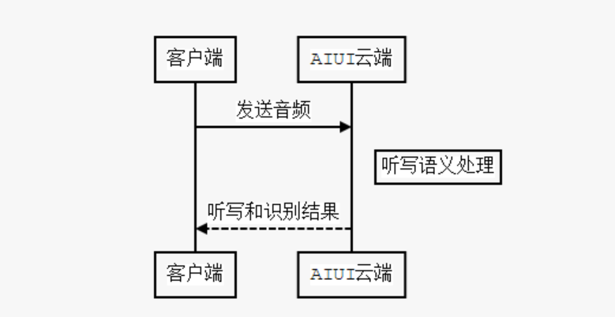
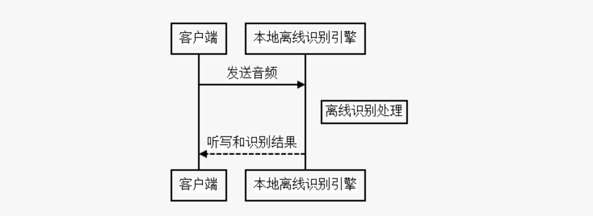
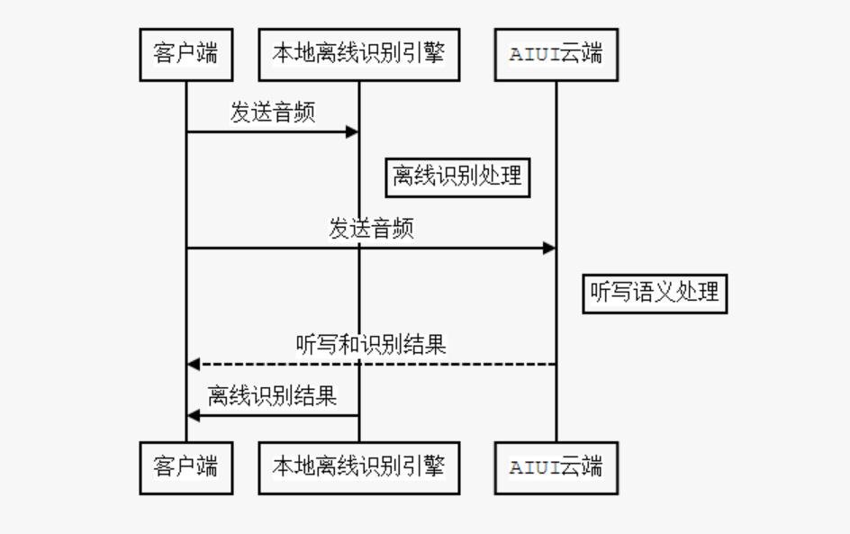

8.2. 如何开启离线命令词模式¶
云端模式:
"speech":{ "intent_engine_type":"cloud" }
AIUI的默认模式，不开启离线功能，全部使用云端语义和听写功能。

本地模式:
"speech":{ "intent_engine_type":"local" }
AIUI完全离线，只使用本地的离线命令词功能。 在此模式下AIUI功能非常受限，只能完成简单命令词的识别。

混合模式:
"speech":{ "intent_engine_type":"mixed" }
混合模式下，音频会同时送到本地离线引擎和云端解析。 结果选择策略是哪个先返回有效结果，就采用哪个。
另外需要注意aiui.cfg中要包含如下配置项
// 离线语法识别参数 "asr":{ "threshold":"50", "res_type":"assets", "res_path":"asr/common.jet" },